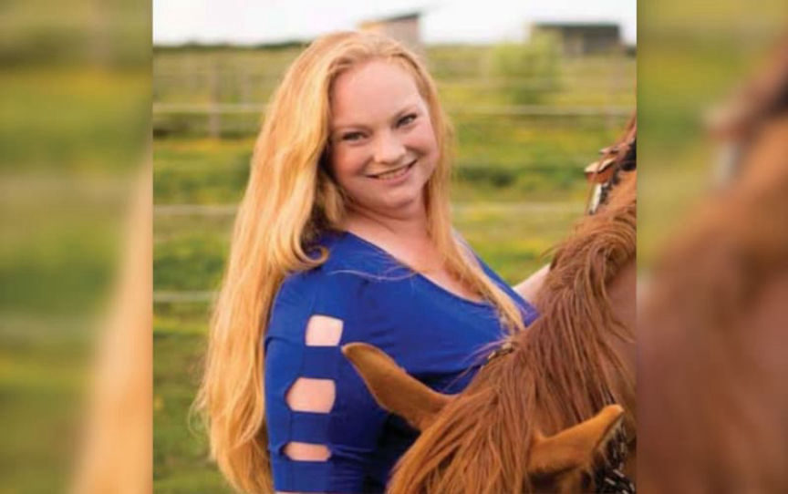

Nevada Woman Sentenced for Attempting to Hire a Hitman

Kristy Lynn Felkins
Kristy Lynn Felkins, 38, was sentenced to five years in prison after admitting she paid $5000 in bitcoin to Besa Mafia, the now-defunct fraudulent murder-for-hire site on the dark web, and placed a hit on her ex-husband.
According to court documents, law enforcement learned of Felkins' plot to have her ex-husband murdered in September 2019. An agent with the Northern California Illicit Digital Economy (NCIDE) task force reportedly received copies of messages exchanged between the admin of the murder-for-hire site and a user going the by username "KBGMKN" from an informant.
The investigators established that KBGMKN created an account on the site in February 2016. KBGMKN began by expressing concerns over the site's negative reviews. The admin, however, managed to trick her into believing that the site was legitimate by offering advice on how she would avoid being caught.
In early March, KBGMKN deposited 12 bitcoin into the site, placed an order, and asked that the hit be made to look like an accident. She also provided the admin with the intended victim's home address, the time he left for work, vehicle information, and locations at which he could be found. The admin confirmed the receipt of the order and payment and disclosed that a hitman had been assigned.
And just like any other murder-for-hire case, the admin began taking KBGMKN in circles, giving her endless excuses as to why the murder had not taken place and asking for more money.
On March 20, 2016, for example, the admin told KBGMKN that the hit would require a sniper because the target had not been seen alone and the hitman didn't want to leave witnesses behind. The admin claimed the sniper would cost KBGMKN an additional $4,000. In response, KBGMKN wrote that she could not afford to spend $9,000 on the hit.
A few days later, after disclosing that the hit had once again failed, the admin asked KBGMKN why she wanted to have the target murdered.
Quote: KBGMKN's response
I do stand to get money from this but that isn't the reason behind my motivation....
This man mentally, physically, sexually and emotionally abused me. I ran, and then he took my children away from me. He now mentally abuses my children and threatens their physical well being. He is quite the snake and master manipulater..... I know I can get the 4000 in 4-5 weeks. And right now the children are visiting grandparents so they aren't at risk of witnessing or possibly being involved. They are safe and comfortable. My family and friends are not people to have a lot of money, and I have already borrowed from them all they can give trying to settle things with him legally with lawyers. The money I have already sent to you was the last I had to pay the lawyers for the next battle we are up against My bank accounts are bare from running, relocating, starting over and Lawyers.
Not to mention I stand to get his retirement, our house and possibly a large life insurance payout.
The admin then claimed he would have the hit carried out and KBGMKN would in return send the additional payment after receiving the insurance payout.
KBGMKN informed the admin that her ex-husband would be taking a trip and asked the admin to instruct the hitman to make the hit during the trip.
What followed was a series of excuses by the admin claiming the hitman could not locate the victim. In response, KBGMKN would send the admin the target's location but the hit never took place.
Seemingly fed up with the admin's excuses, KBGMKN asked the admin to provide evidence that the hitman was actually tracking the target. She asked the admin to provide a picture of a street sign in North Carolina. The picture had to include the hitman's finger. The admin sent KBGMKN a photo that KBGMKN said, “was obviously a Google Street view with a photo shopped finger added in.” As expected, the admin never provided a real photo.
The investigators established that the bitcoin sent to the murder-for-hire site came from a LocalBitcoins account. The account was created in late February 2016, under the username “Kristy L Felkins” using the email address: [email protected]. The account was also linked to a phone number associated with Felkins.
While reviewing Felkins’ email account, the investigators found out that she had used the email to post an advert on Craigslist. The IP address used to create the advertisement was the same as the IP address used to access the LocalBitcoins account.
The investigators arrested Felkins in September 2020. She was charged with one count of Use of Interstate Commerce Facilities in the Commission of Murder-for-Hire. She pleaded guilty on March 17, 2022.
In addition to the prison sentence imposed on July 20, 2023, Felkins will be placed under supervised release for three years.